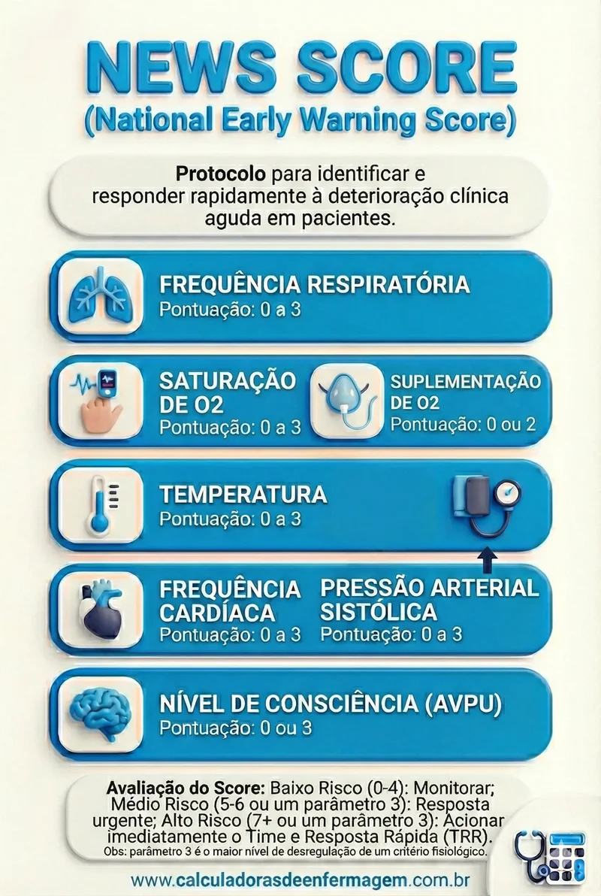

Protocolo NEWS
National Early Warning Score (NEWS) É uma ferramenta para detectar pacientes em risco de piora clínica antes que fiquem graves.
Selecione a pontuação correspondente à condição do paciente para cada variável:
Escala de NEWS
Identificar problemas nos padroes fisiológicos e atuar antes de complicações maiores ao paciente.
O sucesso do atendimento ao paciente crítico dependerá, de seu correto diagnóstico. Porém, seja qual for o seu diagnóstico, se identificado precocemente, medidas implementadas terão maior efetividade, o que acarretará em um melhor prognóstico. Por isto, que se identifique precocemente os pacientes graves.
O não reconhecimento precoce destas complicações, levam a piora da doença, e, nesta situação, mesmo adotando um conjunto de medidas complexas e de custo elevado, em um grande número de vezes, a resposta passa a ser lenta e nem sempre resulta em sucesso.
É possível identificar precocemente estes pacientes. Os pacientes apresentam “pistas”, totalmente perceptíveis, horas antes do quadro se tornar extremamente grave.
Necessitamos aprender a sistematizar o reconhecimento para termos (e não perdermos) a chance de atuar de forma exemplar. Uma ferramenta utilizada para este fim é o “NEWS” (National Early Warning Score – Escore para Alerta Precoce-EPAP).

Royal College of Physicians. *National Early Warning Score (NEWS) 2: Standardising the assessment of acute illness and identifying patients at risk of clinical deterioration*. London: RCP; 2017. Disponível em: rcplondon.ac.uk